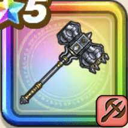

まじんのかなづち
攻略班 7.5点 / たいぼく斬オノまつり活震撃魔神の炎槌禁忌の秘法
くわしい特徴
【レベル別習得スキル】 Lv1【ゴドハン】攻撃力+5 Lv10たいぼく斬（消費MP：5）植物系に威力160%それ以外の系統には130%の斬撃ダメージを与える Lv15オノまつり（消費MP：15）周囲を粉砕して敵全体に威力170%の斬撃ダメージを与える Lv20活震撃（消費MP：31）敵全体に威力260%のジバリア属性体技ダメージを与え、味方全体のHPを少し回復する Lv30魔神の炎槌（消費MP：42）敵1体に威力600%のメラ属性体技ダメージを与え、まれに自分の会心率を上げる Lv35会心率+5% Lv40悪魔系へのダメージ+5% Lv45守備力+12 Lv50禁忌の秘法（消費MP：8）自分の斬撃・体技ダメージを上げるが、受けるスキルHP回復効果が下がる(効果4ターン) 【限界突破スキル】 1凸スキルの斬撃・体技ダメージ+7% 2凸スキルの斬撃・体技ダメージ+7% 3凸スキルの斬撃・体技ダメージ+7% 4凸スキルの斬撃・体技ダメージ+7%